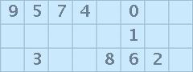

Your browser does not support the features required by impress.js, so you are presented with a simplified version of this presentation.
For a better experience please use the latest Chrome, Safari or Firefox browser.
PandaOCR
A dummy terminal based OCR written in Python.
Why a dummy OCR?
For dummy images such as:
- Virtual digit keyboards;
- Bad captchas.
|  |
 | |
Why are these images so dummy?
The problem comes from the creation process.
These images are built from the concatenation of small images containing the wanted characters.
Why is it interesting?
These images are used for critical applications such as banking websites.
They assume that a simple image will stop brute force attacks.
Someone has to prove them wrong.
How it works ? (1/2)
It simply takes a chosen color (with a threshold) and the size of a cell.
It makes a map of the pixels matching the color.
Then you have to tell it what character you see.
How it works ? (2/2)
It learns from what you type, so you should not have to type the same character twice.
It handles simple captchas
Captchas are a little more tricky since there is no cell with fixed geometry.
So, I introduced an option which allows the user to specify the width for each character.
With captchas (1/2)
It works just like for grids, but it asks for the width of the letter.
Questions ?
For any question I could not answer, here is a universal answer:
Click here